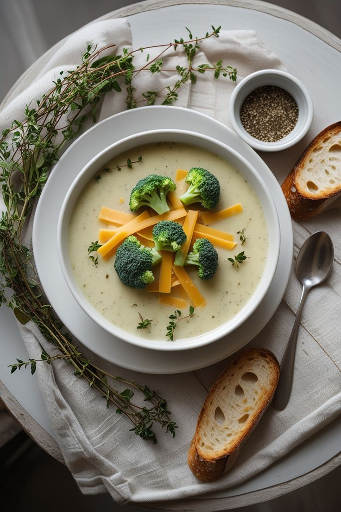
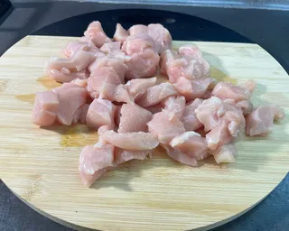
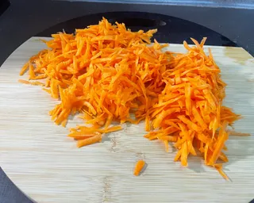
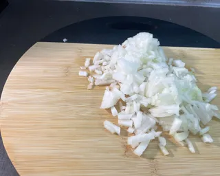

Сирний суп із броколі

Сирний суп із броколі — ніжний, ароматний і дуже ситний! Цей суп ідеально підійде для обіду або легкої вечері. Плавлений сир, вершки та овочі створюють кремову текстуру й ніжний смак, а спеції додають яскравих ноток.
Інгредієнти
- 2 шт. куряче філе
- 1-2 цибулини
- 2 морквини
- броколі свіжа або заморожена
- 1 упаковка м’якого плавленого сиру
- 500 мл вершків
- вершкове масло для смаження
- копчена паприка, сухий часник, чорний перець, сіль
Інструкція з приготування

1. Курячу грудку заливаємо водою, доводимо до кипіння й перший бульйон зливаємо. У чистій воді варимо грудку далі.


2. Тим часом обсмажуємо на вершковому маслі дрібно нарізану цибулю та терту моркву.
3. Додаємо овочі до киплячого бульйону. Через 10 хв додаємо плавлений сир, вершки та броколі. Приправляємо спеціями, доводимо до кипіння і вимикаємо.